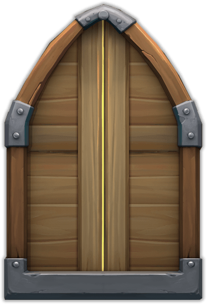

During my CIS 4301 course, Information and Database Systems 1, I was placed in a team of 4 computer science students and we were given several tasks to complete. We had to download a database of at least 100,000 tuples, upload the data to the UF Oracle network through SQL Developer, and then create an interactive webpage that is linked to the database and can run queries to retrieve information for a user. The process also included much careful planning of how the website would look, preparing conceptual and logical models for our data before generating the tables used to store it, and much research into how to actually open and close a database connection from our website to the database. The languages that we used to create the website were HTML and CSS, with Bootstrap being relied upon to add some of the embellishment. SQL was required to actually query the data and retrieve information to a user when they needed it. PHP was the language that we settled on to establish the database connection and run the SQL queries. The link above: 'Database System Webpage', will take you to our website so that you can interact with our database and judge our body of work for yourself. |
||
This project was begun in the Summer of 2014 on my own volition. It is a text-based, dungeon- delving adventure game that I developed using Java so that I could master the language, use as many concepts as I could think of, and implement some mechanisms which were new to me at the time (i.e. a sorting algorithm for the inventory). The video game uses various advanced concepts in object-oriented programming such as inheritance, polymorphism, hash maps, a turn-based battle system, and a great deal of creativity and imagination from my part when it came to generating new weapons, armor types, and even magical spells. The project initially took me two full weeks to complete. I spent about 8 hour days working diligently to get the project done as best as I could, with little to no code duplication, many comments, and plenty of positive programming practices. Although it was not bug-free at the time of completion, I have occasionally played the game and fixed what I hope to be nearly all of the bugs. Although I do not have an executable .jar file for the user to actually see the game, I did provide the link to the github repository containing the code so that you can my code and programming practices when I was beginning my own adventure into computer science. |
 | |
Contact Information
E-Mail: fperez191993@yahoo.com